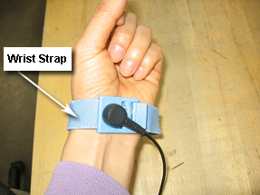
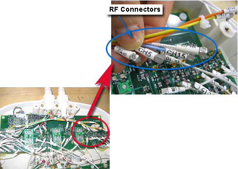
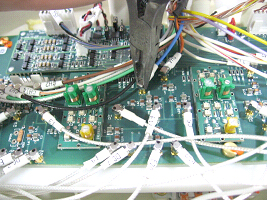
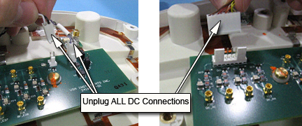
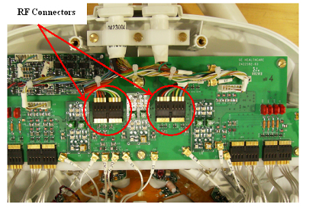
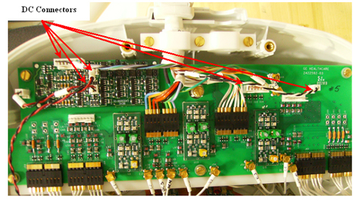

- 00000018WIA30F4FD20GYZ
- id_131072555.1
- Jun 6, 2025 7:16:15 AM
1.5T Head Neck Spine (HNS) Coil Cable Replacement
Prerequisites
| Personnel requirements | |||
|---|---|---|---|
| Required persons | Preliminary requirements | Procedure | Finalization |
| 1 | - | 40 minutes | - |
| Tools and test equipment | |||
|---|---|---|---|
| Item | Quantity | Part number | Manufacturer |
| Standard tool kit - Flathead screwdriver and pliers | 1 | - | - |
| Replacement parts | ||||
|---|---|---|---|---|
| Item | Quantity | Effectivity | Part number | Manufacturer |
| Output Cable-Hypertronics (8-Channel “B” connector) for the Head Neck section with the Coil ID Board | 1 | HNS Rev. 2 Upgrade with the Coil ID Board | 2417356 | - |
| Output Cable Bendix without the Coil ID Board. | 1 | HNS Rev. 2 Upgrade without the Coil ID Board | 2417357 | - |
| TL Unit Cable | 1 | HNS Rev. 2 without the Coil ID Board | 2417358 | - |
| Output Cable (16-Channel “B” connector) for the Head Neck Section with Coil ID Board. | 1 | HNS Rev. 2 Forward Production with Coil ID Board | 2417359 | - |
| 8-channel HNS Bendix FRU | 1 | HNS Rev. 3 Upgrade without the coil ID Board | 2423317 | - |
| HNS TL Unit Cable FRU | 1 | HNS Rev. 3 without the Coil ID Board | 2423318 | - |
| 8-channel HNS B-port FRU | 1 | HNS Rev. 3 Upgrade with the Coil ID Board | 2423319 | - |
| 16-channel HNS B-port FRU | 1 | HNS Rev. 3 Forward Production with Coil ID Board | 2423320 | - |
| 16-Channel P-connector HNS Discovery System Cable FRU | 1 | HNS P-connector Discovery with Coil ID Board | 2424269 | - |
About this task
HNS Rev. 2
Procedure
Notice 
Put an ESD wrist strap on and ground.Notice Figure 1. ESD Wrist Strap On 
- Unscrew the cable clamp from the coil as shown. Retain the original screws used.
Figure 2. Removing the Cable Clamp 
- Identify and remove RF connectors (CH in Head Neck Unit (HNU), J in Thoracic Lumbar Unit (TLU)) from interface Board. Pliers may be necessary for removal of the MMCX connectors, as they may be difficult to unplug. This will help prevent accidental breakage of the cables.
Figure 3. RF Connectors in the HNU 
Figure 4. Using Pliers for Removal of Connectors 
Figure 5. RF Connectors for the Thoracic Lumbar Unit 
- Identify and remove DC connectors (DC) from Interface Board and Coil ID PCB.
Figure 6. DC Connectors: Forward Production Coil (1 System Cable) Head Neck Unit (HNU) 
Figure 7. DC Connectors: HNU Illustration (2 System Cables) (Upgrade Specific) 
Figure 8. DC Connections: TLU 
- Identify the Interface Board Assembly and the coil ID PCB located on the Interface Board (Head Neck Unit (HNU) Only). Carefully remove the Coil ID assembly.
Figure 9. Interface Board and Coil ID PCB Locations 
HNS Rev. 3
Procedure
Notice
Put an ESD wrist strap on and ground.Notice Figure 10. ESD Wrist Strap On - Unscrew the cable clamp from the coil as shown. Retain the original screws used.Note When re-installing components, tighten all screws snugly, but do not over-tighten. The recommended torque is 10 in-lbs for M4 screws and 15 in-lbs for M5 screws.
Figure 11. Removing the Cable Clamp 
- Identify and remove ganged RF connectors from interface Board.
Figure 12. RF Connectors in the HNU 
Figure 13. RF Connectors for the Thoracic Lumbar Unit 
- Identify and remove DC connectors (DC) from Interface Board and Coil ID PCB.
Figure 14. DC Connectors: Discovery and Forward Production Coil (1 System Cable) HNU 
Figure 15. DC Connectors: HNU Illustration (2 System Cables) (Upgrade Specific) 
Figure 16. DC Connections: TLU 
- Identify the Interface Board Assembly and the coil ID PCB located on the Interface Board (Head Neck Unit (HNU) Only). Carefully remove the Coil ID assembly.
Figure 20. Interface Board and Coil ID PCB Locations 
Finalization
Procedure
Perform a good bye scan with this coil to confirm that the repaired
coil operates properly.